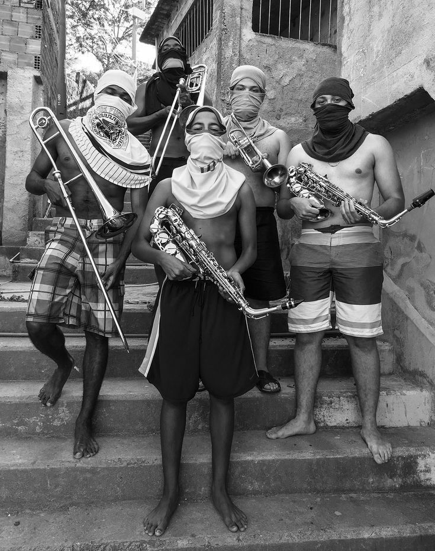

Cada instrumento é uma arma simbólica. Cada nota, um manifesto.
A música que sobe essas escadas não foi escrita em partituras tradicionais — ela vem do peito, da rua, da vivência.
Esses corpos, juntos, desafiam a lógica da escassez: criam harmonia onde há ruído, criam arte onde faltam espaços.
É um retrato de potência comunitária, onde o ritmo é ferramenta de identidade e a melodia, ponte entre o invisível e o inesquecível.
Na margem, o som não é entretenimento — é existência.